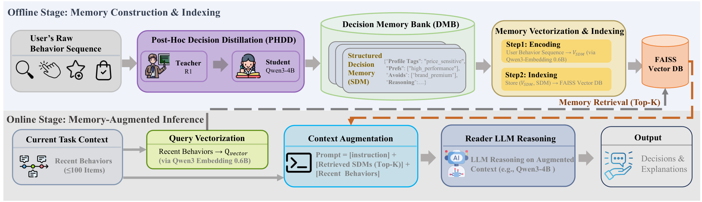
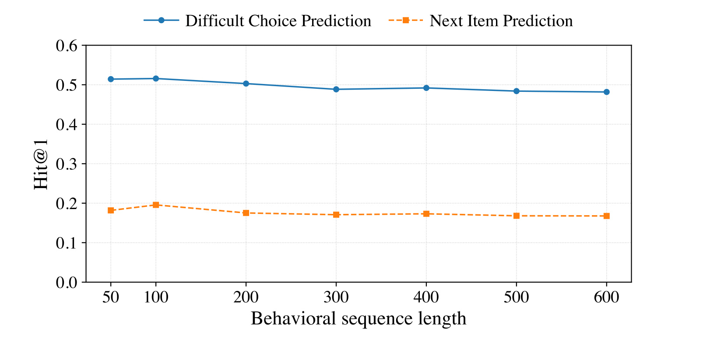
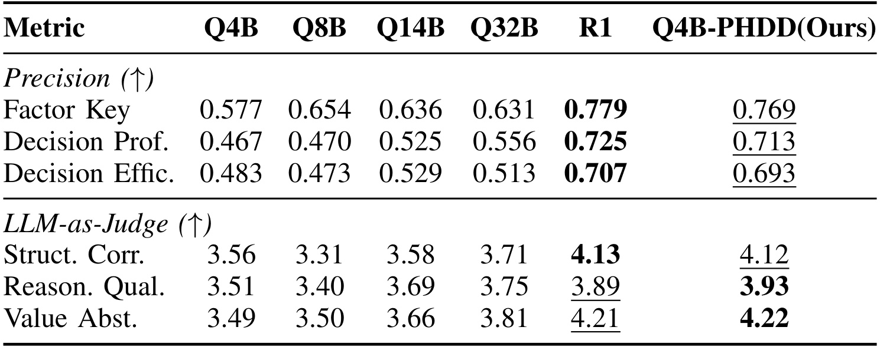
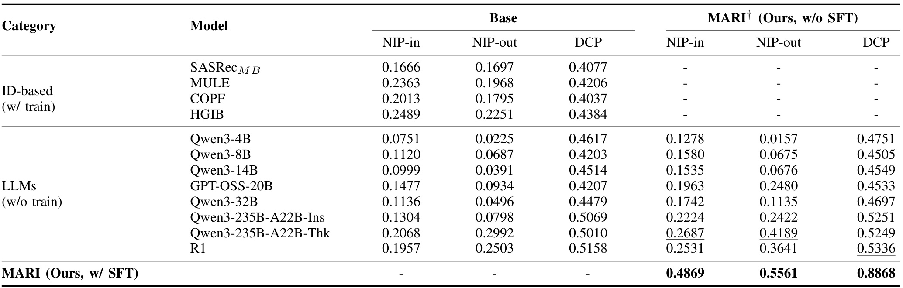
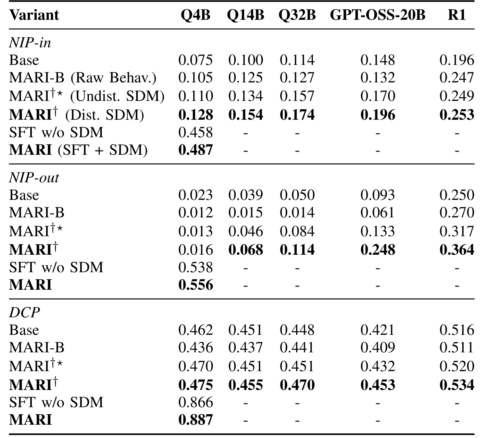
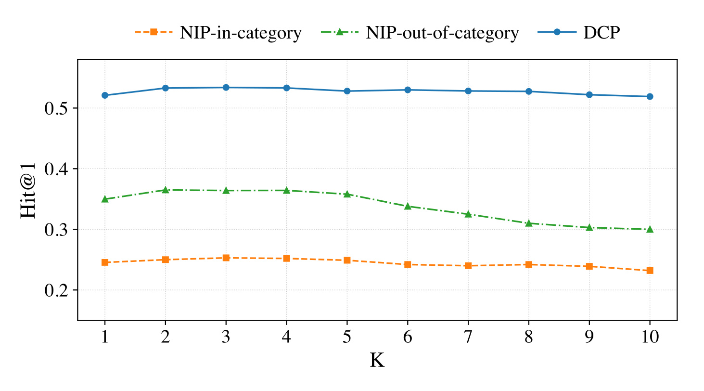
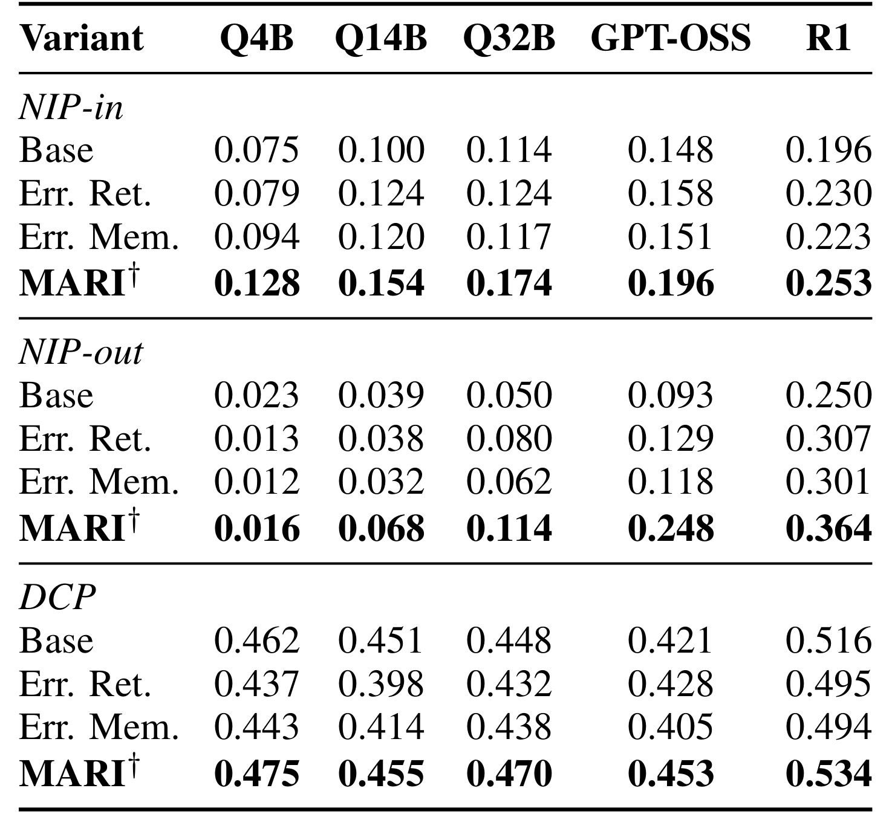
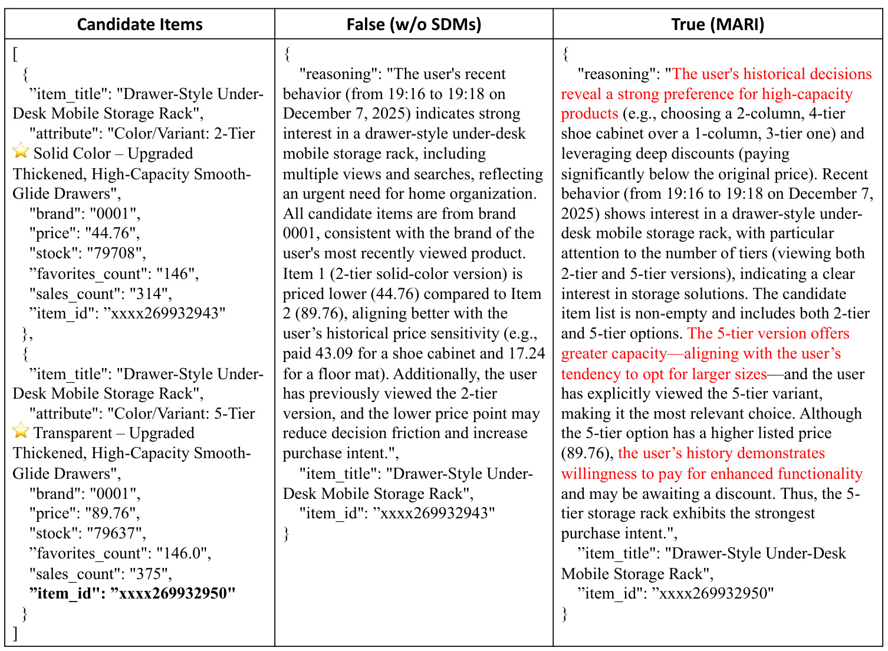

阿里巴巴 MARI：把多行为历史蒸馏成结构化决策记忆
论文：Beyond Sequences: Distilling Structured Decision Memory for LLM Recommendation。作者为 Leikun Liang、Guoshuai Wang、Xingsheng He、Yushan Han、Yunyi Xuan、Xiaoxiao Xu、Lin Qu，机构为 Alibaba Group；第一、二作者共同一作，Xingsheng He 为通讯作者。论文于 2026 年 10 月 8 日公开，本笔记核验版本为 arXiv v1。论文入口。本轮未核验到独立代码链接；以下数值来自作者报告的离线实验，未独立复现。
这篇论文把推荐中的长期历史改写成可检索的决策记录。与只记下买过哪些商品相比，记录还描述用户在一个品类里怎样比较、偏好哪些属性、回避哪些属性，以及可能怎样在价格与功能之间权衡。其主要验证场景是近期行为中的购买预测和少量相似商品之间的选择，读论文时需要一直保留这一候选空间边界。
把搜索、浏览、收藏和购买扁平地拼成同质文本序列，会丢失这些行为在决策中的不同角色，也难以保留价格、质量等属性之间的权衡。面对高度相似的商品，模型因此可能看见大量历史行为，却抓不住真正区分候选的决策依据。
1. 背景和问题
电商购买通常不是一次独立动作。用户可能先搜索一个用途，随后查看几个不同价位的商品，再收藏一款、比较规格，最终购买另一款。搜索告诉我们用户在寻找什么，浏览包含探索与犹豫，收藏表达了比偶然曝光更强的兴趣，购买则是已经完成的选择。如果把这几类行为仅表示成商品编号，模型可以学习“浏览某款后常购买另一款”的相关性；如果把所有行为直接转成一条文字序列，语言模型能够读懂商品描述，却仍需在一次推理中重建动作之间的意义。MARI 针对的就是后者：怎样把异质行为所暗示的目标、约束和取舍从繁杂历史中提取出来，再用于当前推荐。
这与常见的全局用户画像有明显差别。“喜欢某品牌”“价格敏感”是容易记忆的概括，却会把情境压平。一个人在食品类目可能愿意为有机认证付费，在电子产品里却看重储存容量，对服装又只接受特定材质。若把这些证据合并成一个固定画像，当前任务究竟应该调用哪一条偏好并不清楚。论文将购买决策放回品类上下文，并为每次历史购买保留一条结构化记录。这种粒度允许同一用户拥有多条不完全一致的记忆，也承认其决策依据会随情境变化。记忆库因此不是静态标签表，而是一组有时间、有类别、有行为依据的历史解释。
作者在相关工作中区分了三条既有路线。第一类用语言模型增强用户或商品表征，提升文本语义能力，但推荐仍主要依赖隐式向量；第二类直接把交互历史交给语言模型预测；第三类压缩历史或生成用户摘要，以减少长上下文的处理负担。本文认为，压缩解决了长度问题，并不自动解决决策语义问题。一个摘要若仅告诉模型用户做过什么，就可能遗漏“为何在两个近似商品之间选了其中一个”。检索增强推荐也有类似区别：检索共同购买行为、协同信号或商品资料，提供的是额外证据；MARI 检索的则是经过事后分析的历史决策记录，试图使证据更贴近当前需要比较的属性。
商品粒度同样重要。文中把商品定义在 SKU 层，同一标题下的颜色、容量、尺寸或配置组合可以对应不同对象。标题级推荐可能把两件商品当成几乎相同，SKU 级预测却必须区分具体变体。附录 A 的婴儿车例子同时提供标题、品牌、价格、颜色、车架与车轮配置，以及库存、收藏和销量；附录 B 中同品牌同标题的杯子仅在颜色与价格等属性上不同。这些元数据使语言模型能够比较细节，也使实验不同于只含匿名 ID 的公开多行为数据。另一方面，附录候选示例里两款杯子出现相同的遮蔽商品编号，因此不能拿这个示例判断实际数据集的编号唯一性；它只是展示字段形式，并不是可直接复现的完整样本。
论文首先定义 Next-Item Prediction，简称 NIP。目标是预测用户下一次购买的商品，但原文明确说，这件商品此前已经通过浏览或搜索出现在近期上下文中。实验部分进一步说明，所有基线都从相同的近期历史候选空间选出目标。因此，这里的“下一商品预测”实质上是从用户近期接触过的商品中识别最可能被购买的一件，包含跨品类判断，却没有测试从全平台商品库召回一个未出现过的对象。这个区别影响工程迁移：它更接近购买意图判别或候选排序中的选择，不能直接对应全库召回的命中率，也不能把模型生成商品编号解释成开放世界推荐能力。
第二个任务 Difficult Choice Prediction，简称 DCP，刻意把难度集中到相似候选的细粒度取舍。候选来自同一品类，数量为二到五件，由语言模型根据用户近期表现出的犹豫与比较行为筛选，再人工核验。目标是选择下一次真实购买的那一件。这里知道目标品类，模型不必同时判断该推荐哪个类别，却需要区分替代性很强的商品。这个设计使“偏好容量还是低价”“接受哪个颜色”等问题更突出。它也带来评测限制：命中率取决于候选数量、相似程度和候选构建方式；二选一与五选一的随机难度不同，在没有各候选规模分布的情况下，不能把总体命中率和其他推荐基准直接比较。
作者另外划分 NIP-in 和 NIP-out，考察熟悉品类与新目标品类。前者要求用户此前购买过目标所属品类，后者意在评估跨品类迁移。需要注意，数据段落把 NIP-out 描述为目标购买是该类的首次交互，这与 NIP 定义中目标商品已在近期非购买行为里出现的措辞存在张力。最保守的阅读是：该分组旨在测试缺少同品类历史购买记忆的情境，而精确的过滤实现仍需作者补充。不能据此宣称测试了完全没有该类浏览记录的冷启动用户，也不能将其等同于新用户或新商品推荐。
长历史是另一条动机。作者用 DeepSeek-R1 改变输入交互长度，发现简单增加行为数没有持续改善购买预测。语言模型既要找当前意图，又要判断历史行为的相关性，较远的无关动作可能占用上下文、强化过时偏好。本文选择保留短期行为，另将长期信息转换成可以定向检索的决策记忆。这个思路的价值是让短期意图与长期证据承担不同作用：当前行为描述用户正在看什么，历史记忆提供过去做类似比较时留下的线索。但这仍是预测性解释，原始日志无法直接观测用户内心动机，因而“决策逻辑”从一开始就应被理解为可核查行为所支持的模型推断，而不是已经获得真实因果标签。
这些任务还要求区分偏好和机会：一件商品是否被浏览过，取决于上游曝光与搜索行为；一次购买可能来自促销或即时需求。作者选择已观察候选，降低了生成未知商品的难度，却也把分析限定到用户曾经接触过的范围。因此本文的核心问题是如何利用候选内的决策证据，而非证明记忆已经完整描述用户的所有潜在兴趣。
2. 方法
2.1 分类别的决策记忆库
MARI 的总流程先在离线端构建记忆，在线端再把少量相关记忆与近期行为一起交给推荐模型。原文 Figure 3 把这条界线画得很清楚。

框架上半部分从原始用户行为进入事后决策蒸馏，由教师提供监督并训练小模型，最终生成结构化决策记忆。每条记忆同时关联一个行为序列的向量，存入用户自己的决策记忆库。下半部分以最多一百条近期行为作为当前上下文，先形成查询向量，再选择历史记忆，把指令、记忆和近期行为组成推荐输入，输出商品选择与解释。离线端加工的是已经结束的购买决策，在线端面对的是尚待预测的新选择；这条时间边界应贯穿数据构建和评测。原图统一画了向量检索与 Top-K，但正文的 DCP 实际采用品类内最近记忆优先，因此图中的统一箭头只是总体示意，不能取代任务自适应检索公式。
图中嵌入编码器为 Qwen3-Embedding-0.6B，向量库使用 FAISS，推荐阅读器以 Qwen3-4B 为例。存入索引的向量来自记忆对应的购买前行为序列，结构化记忆则是被取回并交给模型阅读的内容。这一点避免把“给记忆文本做向量检索”误当原文实现。离线和在线编码器相同，使当前行为与历史行为在同一表示空间比较。由此，系统可以利用历史中行为模式相似的购物过程，而不仅依据商品标题重合。离在线分离减少了在线重复分析全部长期历史的需求，但离线构建仍需蒸馏训练、生成、编码和维护，这些成本不能因为框架里放在上半部分就视为已经消失。
形式上，异质历史保留商品、行为类型和时间，决策记忆库按类别汇集历史购买记录；每条结构化记忆用五个字段表示：
符号解释：$u$ 是用户，$i_t$ 是第 $t$ 次交互的 SKU，$a_t$ 是搜索、浏览、收藏或购买等行为，$\tau_t$ 是时间，$T_u$ 为历史长度；$c$ 是品类，$J_{u,c}$ 是用户在该类的购买次数；$e$ 是对应购买前序列的嵌入，$M$ 是记忆，记忆项的 $\tau$ 是购买时间。五元组中的 $R$ 是决策意图解释，$T$ 是决策画像标签，$E$ 是决策速度类型，$P$ 是偏好因素集合，$A$ 是回避因素集合。这里的集合并不会自动合并互相冲突的记忆，类别与时间是后续取用证据的重要条件。
意图解释以自然语言串起行为，标签来自预先定义的词表，例如品牌敏感、价格敏感；决策速度分为瞬时、快速、审慎、漫长四种类型，由持续时间、比较数量和回访等信号推断。偏好与回避因素则使用属性键值对，如偏好的品牌或价格区间，以及被放弃的材质或过高价格。标签和属性键经过大规模电商数据上的语言模型聚类整理为闭集，属性值与推理内容仍保持开放文本。结构化字段提供的是一套可重复调用的决策描述接口。它比一个泛化长摘要更容易定位到具体维度，但“看过却没买”不一定意味着讨厌：预算变化、缺货、曝光次序等都可能造成同样的行为轨迹，因此回避字段尤其需要保留证据和不确定性。
2.2 事后决策蒸馏 PHDD
PHDD 先针对每个已完成购买事件抽取同品类、严格早于购买时间的行为，再让 DeepSeek-R1 作为教师生成推理轨迹和结构化记忆。生成阶段允许把购买后的评论当作特权校准参考，用来检查推断合理性；作者称教师的决策推断仍以购买前行为为依据，不直接泄露评论文字，输出随后经过核验。学生只接收购买前行为及类别，学习教师推理加最终记忆的文本序列：
符号解释：$\tau^*$ 为当前已知购买事件的时间，$H^{\mathrm{pre}}$ 只收集该时间以前的同类交互；$\phi^{\mathrm{PHDD}}_{\mathrm{stu}}$ 是基于 Qwen3-4B 全参数微调的记忆生成学生；$y^{\mathrm{tea}}_{1:L}$ 是教师的思维链与最终记忆组成的目标 token 序列，$L$ 是序列长度，$y_{<l}^{\mathrm{tea}}$ 是前面已生成的监督 token。损失是自回归交叉熵，优化的是学生对教师输出的拟合，并没有直接观察或优化用户真实心理原因的误差。
教师能够看购买结果是事后分析成立的前提；评论只在训练样本构造时出现，则是更强的监督条件。它可以帮助教师修正没有依据的判断，也可能把只有结果发生后才知道的信息编码进监督文本。评论不作为学生输入，并不单独证明监督标签没有携带事后偏差。严谨复现应追踪每条记忆的构建时间、使用的事件窗口和审核规则，确保未来预测时只调用在该次预测以前已经可用的记忆。论文说明了前置序列过滤和学生输入限制，但没有公开到足以逐样本重建评论校准流程的细节。训练好的学生用于历史购买的批量记忆生成，再由冻结编码器为这些事件的前置行为生成向量；线上推荐不需要临时再调用教师分析全部历史。
2.3 任务自适应检索与两种部署
对于 NIP，目标品类事先未知，作者跨类别比较当前行为向量与历史购买前向量，取余弦相似度最高的记忆。对于 DCP，当前会话已经给定目标品类，检索优先选择该类中时间最近的记忆；该类没有记忆时，才退回跨类别相似检索。两种规则的区别体现在公式中：
符号解释：$e_{\mathrm{ctx}}$ 是近期行为的查询向量，$S_u$ 是最终注入的记忆集合，$K$ 为记忆条数；$c_{\mathrm{target}}$ 是已知目标类别，$\mathrm{TopK}_{\mathrm{time}}$ 表示按时间选最近的 $K$ 条。相似检索试图找到当前探索过程的历史对应物，品类内时间检索则假设细粒度取舍更应参考近期变化。DCP 的默认路线不是统一近邻检索，而是类别约束加时效优先。这决定了工程实现既要有向量能力，也要有按类别和时间筛选的元数据索引。
取回记忆后，模型同时看到近期行为，DCP 还看到明确候选集合。附录提示词要求先识别意图，再在候选非空时从候选选一个，候选为空时回到近期行为选一个，最后输出解释、商品标题和商品编号的 JSON。部署有两种模式：即插即用模式只改变现成推荐语言模型的上下文，不更新它的参数；蒸馏推荐模式再训练一个 Qwen3-4B 学生，学习教师在近期行为与记忆条件下生成推理和商品结果。后者的损失为：
符号解释：$\phi^{\mathrm{rec}}_{\mathrm{stu}}$ 是推荐学生，$C_u^{\mathrm{pre}}$ 是目标购买之前的近期上下文，$S_u^{\mathrm{pre}}$ 是按任务规则取回的历史记忆，$\oplus$ 表示在提示中组合两部分，$y^{\mathrm{rec}}$ 包括教师推理及目标商品。记忆生成学生与推荐学生虽然都基于四十亿参数模型，却是两个角色和两套监督任务。即插即用的“无需训练”仅针对推荐阅读器接入步骤，不能推导为整个 MARI 从头到尾无需训练，也不能忽略记忆生成的离线成本。
3. 实验结果
3.1 数据任务与原始序列诊断
实验使用一家大型电商平台六个月的私有日志，包含搜索、浏览、收藏和购买，以及商品文本和属性。PHDD 数据保留原始细粒度行为，不过滤或去重，训练、验证、测试各为二十万、一万、一万条。其输入最长二百条，仅考虑目标决策前两周的同品类交互。推荐数据 MBR 先将相同用户、商品、行为的重复记录合并并保留最早一次，再做十核过滤，只保留交互数至少十次的用户和商品。每个用户按时间留一划分，最后一次购买测试，倒数第二次验证，更早部分用于训练。三项任务用户互不重叠，作者同时报告总计十五万独立用户与每任务五万训练、一万验证、一万测试的采样规模；这两组口径不能仅凭正文直接相加对应，需要原始划分清单进一步解释。
PHDD 的标签、速度和属性键使用精确率评估，开放文本使用零到五分的语言模型裁判评估结构、推理质量与属性值抽象。裁判是 DeepSeek-R1，参照人类核验的答案。推荐任务只报告 Hit@1，即每条测试预测的单一商品是否等于真实购买商品，分母是对应任务测试实例数，每任务报告为一万条。近期行为最大长度固定一百，记忆数默认三，推荐学生在三个任务混合数据上全参数微调。作者将未经微调的语言模型与已训练的 ID 基线都放入统一候选空间，因此后续数字比较有共同任务边界；其数据仍是私有的，未验证可在公开数据上复制相同难度。

图横轴是原始输入序列长度，纵轴是 DeepSeek-R1 的 Hit@1，两条曲线分别对应困难选择与下一购买预测。下一购买曲线在约一百条附近达到局部较高点，随后更长输入并没有继续提升；困难选择曲线也随长度增加总体略下降。图支持的结论是“在作者这套输入表达和任务里，长原始历史的边际收益有限”，而不是任何模型处理超过一百条都必然失败。模型可能受到行为噪声、跨品类信息、提示词安排和有效意图密度影响，这个诊断本身没有把原因逐个隔离。作者据此选择一百条近期输入，再通过记忆补充长期信息，所以图是具体的超参数动机，不能拿来证明记忆机制的独立收益。
这张图也没有提供毫秒级延迟、显存或输入 token 数。交互条数并不等于 token 数，一条商品元数据可能比另一条长很多；不能据曲线直接算出节省多少计算。若希望把结果搬进工业排序，应同时记录实际输入长度、行为窗口与类别分布，分别比较短历史、长历史和短历史加记忆。本文的趋势值得复核，但图上没有误差条或多次运行范围，因此不宜把小幅曲线差异解释成已证明的显著变化。任务有固定候选限制，准确率随历史长度变化也并不反映召回覆盖率随全库规模变化。
3.2 记忆生成质量

Table I 应逐指标阅读。未训练 Qwen3-4B 的属性键、决策画像、决策速度精确率分别为零点五七七、零点四六七、零点四八三；PHDD 后分别到零点七六九、零点七一三、零点六九三。与同一个四十亿参数基础模型相比，闭集字段识别有明确提升，说明蒸馏为结构化接口带来了任务适配。但 DeepSeek-R1 三项对应数值为零点七七九、零点七二五、零点七零七，仍分别高于蒸馏学生。因此原文的“接近大教师”可以保留，“全面超过教师”则不成立。字段质量也不是百分之百正确，后续检索与推荐要面对不可靠因素。
开放字段方面，PHDD 学生的结构正确性为四点一二，略低于 R1 的四点一三；推理质量为三点九三，对比 R1 的三点八九；属性值抽象四点二二，对比 R1 的四点二一。后两项有小幅数值优势，但差值只有零点零四和零点零一分，而且裁判模型与教师同属 R1 路线。参照人类核验答案能改善可比性，却不能消除模型对自身表达风格的偏好；论文未给这些小差值的置信区间。它证明的是在该评估接口上获得较高一致性，不能证明生成理由在心理层面更接近用户真实原因。
评价精确率时还要知道分母是模型产生的闭集预测条目，而不是购买预测实例的命中率。一个样本可产生多个属性因素，属性键精确率和下游 Hit@1 因而不是同一量。开放字段的零到五分裁判同样不能转成正确购买概率。PHDD 是中间产物质量评估，真正要检验它是否帮助选择，还要看后面的主实验与未蒸馏记忆消融。本文没有公布逐字段人工一致性、不同裁判交叉验证和审核失败率，因此对“高质量记忆”的理解应同时包括这些未覆盖的不确定性。
3.3 购买预测主结果

Table II 区分已训练 ID 模型、未经任务训练的基础语言模型、即插即用记忆增强，以及经过推荐微调的 MARI。后者三项 Hit@1 分别为零点四八六九、零点五五六一和零点八八六八，对应 NIP-in、NIP-out、DCP。以每任务一万测试实例为分母，这些比例表示预测第一名与购买对象相同的比例，DCP 为百分之八十八点六八。最佳 ID 基线 HGIB 的三项为零点二四八九、零点二二五一、零点四三八四。差异很大，但比较同时包含语言元数据、模型能力、监督适配与记忆输入的区别，不能全部归因于结构化记忆；与同样训练目标、不加记忆的学生比较才更接近机制贡献。
即插即用模式有较细的容量差异。R1 的 NIP-in 从零点一九五七到零点二五三一，NIP-out 从零点二五零三到零点三六四一，DCP 从零点五一五八到零点五三三六。以 NIP-out 为例，绝对变化是十一点三八个百分点，相对变化约百分之四十五点四七，两者不能混写。GPT-OSS-20B 在 NIP-out 从零点零九三四到零点二四八零，相对约百分之一百六十五点五；Qwen3-32B 从零点零四九六到零点一一三五，相对约百分之一百二十八点八。大相对增幅也受到低基线影响，其最终准确率仍显著低于经过训练的学生。
小模型揭示了相反结果。Qwen3-4B 在 NIP-out 加记忆后由零点零二二五下降到零点零一五七，下降零点六八个百分点；八十亿参数模型从零点零六八七下降到零点零六七五。两者在 NIP-in 与 DCP 上有所提升，并不意味着跨品类任务同样获益。本文把这一现象解释为小模型跨类别推理能力不足，可作为与结果一致的假设，不能从两个规模点得出普适的参数阈值定律。140亿参数以上的几种模型在 NIP-out 有提升，也存在架构与预训练差异。实际接入时需要按场景看绝对结果，不应把“适配多种规模”改写成所有规模和任务都获得收益。
另外，即插即用的 DCP 数值大体在零点四五到零点五三附近，训练后的零点八八六八是另一种配置。若只说“加三条记忆就达到接近九成”，会把推荐监督训练的作用删掉。Qwen3-235B-A22B 的指令版与思考版也不完全同趋势：两者加入记忆后的 DCP 分别为零点五二五一和零点五二四九，差异很小，不能用模型名称判断哪个在所有任务更优。表中结果没有线上点击、购买转化、用户满意度或显著性检验。它确立了私有离线候选选择中的有力结果，尚没有建立实际流量下的商业收益。
3.4 结构与训练的贡献

消融中的 MARI-B 注入与记忆对应的原始行为，MARI†⋆ 使用未经 PHDD 的 Qwen3-4B 生成记忆，MARI† 使用蒸馏后的记忆。这个顺序使读者能区分“多给信息”“换成结构化信息”和“提高信息生成质量”。例如 Qwen3-32B 在 NIP-out 的基线为零点零五零，原行为注入只有零点零一四，未蒸馏记忆为零点零八四，蒸馏记忆为零点一一四。原日志虽然带来了额外历史，却可能引入干扰；记忆表达和生成质量则能在这个模型上帮助它抽取有用线索。R1 在同任务依次为零点二五零、零点二七零、零点三一七、零点三六四，原日志并非在每个模型上都绝对有害。
四十亿参数模型的监督对照尤其值得关注。NIP-in 的普通 SFT 为零点四五八，加记忆后零点四八七；NIP-out 从零点五三八到零点五五六；DCP 从零点八六六到零点八八七。表 III 采用三位小数，表 II 则是四位，计算应在同一表口径内完成。这里绝对增益大约是二点九、一点八和二点一百分点，而不是从未经训练的零点零几直接跃升全部由记忆造成。基线和 MARI 共享训练目标，只在输入增强上不同，因此这组比较比对大规模未训练模型更有助于判断记忆的额外作用。
从这些数字能得出的结论是：推荐监督适配贡献很强，结构化记忆在此基础上还能改善预测；未训练的阅读器则更依赖其自身能力。表中没有逐个删掉解释、画像、速度、偏好和回避字段的实验，因而不能说五个字段各自都不可或缺。作者也将量化各维度贡献列为未来工作。此外，原日志与结构化记忆的长度、信息压缩率和提示形式可能不同，消融同时改变表达结构与输入负担。若想将“决策语义”从“短输入减少噪声”中分离，还需要长度相同、字段打乱、内容遮蔽等更严格对照。这个未解问题并不抹去效果，却限制了机制归因的强度。
3.5 记忆数与错误记忆

Figure 5 用 R1 阅读器扫描记忆条数一到十。三条或四条附近表现较好，继续增大条数后 NIP-out 的绿色曲线下降最明显，NIP-in 与 DCP 相对稳定。作者默认取三条，是在自己的三任务之间折中，而不是数学上证明的最优值。新增记忆会带来更多历史证据，也可能引入不相关品类和过时偏好；跨类别任务需要筛选并比较这些证据，因此更容易受干扰。这个趋势与 NIP 的跨类别检索设计相符，但仅从曲线无法确认具体下降来自哪一类记忆，更不能推出固定三条适合所有平台、用户和候选规模。
图的纵轴仍是离线 Hit@1，没有随着记忆条数增加而实测的响应时间。较小的记忆数通常意味着提示更短，这是结构推断，不是论文给出的硬件成本结论。实际成本还取决于每条解释有多长、检索是否命中、在线模型是否生成长推理，以及缓存和批处理方式。曲线也没有展示完整数表、置信区间与用户分层，故本笔记不从图像读取到小数点后多位。后续复现应该固定候选和近期输入，按类别历史丰富程度、偏好更新速度以及记忆长度分层，避免总体平均值掩盖少数用户受到错误历史干扰的情况。
比较不同记忆数量时，还应保持阅读器、检索规则、近期行为和候选池相同，否则条数变化可能混入模型或样本变化。当前图是在固定阅读器上得到的任务平均趋势，不能回答每条新增记忆的信息量是否相同，也没有区分高相似与低相似记忆的边际作用。更细的实验可以让总输入长度固定，仅改变独立记忆条数，并比较时间优先与相似优先在跨品类任务中的差异。这样才能判断下降主要来自信息冲突、过时偏好，还是输入负担，而不只把曲线下降归结为记忆越多噪声越大。

Table IV 把检索结果换成最低相似度的记忆，或换成其他用户同类目的随机记忆，分别检查取错自身历史与使用他人历史的扰动。四十亿参数模型 NIP-in 的基线零点零七五，换错误检索为零点零七九，换他人记忆为零点零九四，正确增强为零点一二八。错误记忆仍可能高于基线，说明输入结构或泛化类目线索本身就有帮助。这也使可解释性结论更需要审慎：预测提升并不能单独证明模型使用了该用户真实的历史理由，因为错误的用户归属也能产生一定收益。
NIP-out 上，小模型错误记忆明显更脆弱。四十亿参数模型错误检索零点零一三、他人记忆零点零一二，均低于基线零点零二三；R1 则从基线零点二五零升至错误检索零点三零七或他人记忆零点三零一，但仍低于正确增强零点三六四。DCP 中 R1 的基线零点五一六、错误检索零点四九五、他人记忆零点四九四、正确增强零点五三四，错误因素伤害了精细匹配。这些结果与大模型更能处理结构先验、困难选择更依赖具体属性的解释相容，却没有构成用户原因的因果验证。扰动只覆盖两种错误形式，并未验证错误价格、过时偏好、恶意文本或隐私泄露等真实部署风险。
这两种扰动检验的维度也不相同：最低相似检索保留了用户归属，却削弱了当前情境匹配；他人同品类记忆保留了类别关系，却破坏了个体归属。结果中两者有时仍能帮助预测，因此类别先验、文字结构与个性化内容的作用需要进一步分离。严谨验证应在同样输入长度下交换单个属性或来源用户，检查预测与解释是否一起改变，并要求引用能对应到真实历史事件。只有找到这种可追踪联系，才能把记忆视为个体证据，而不仅是能改善输出的提示形式。
3.6 决策案例与效率证据

原图是一个完整的案例对象，三列分别展示候选、没有记忆的回答和使用 MARI 的回答。候选是同品牌的两层纯色与五层透明收纳架，标价分别四十四点七六和八十九点七六。没有记忆的模型根据用户过往较低价格的购买推断价格敏感，选择便宜的两层款；有记忆的模型引用用户此前选择更大容量鞋柜的经历，将当前需求解释为更看重容量与功能，选择五层款，作者标注后者预测正确。案例说明结构化历史可以改变模型关注的比较维度：价格证据仍然存在，但容量证据不再被低价购买记录遮盖。
它展示的是一种可读解释，并没有验证用户确实因为容量而购买。右列还猜测用户可能等待折扣，这是一种模型推断，不能因为最终商品选择正确就转为事实。用户可能同时受库存、优惠券、配送、家庭需求或展示顺序影响，案例没有观测这些反事实。因而可读性的价值在于便于追踪和审核模型引用了哪些历史，允许人检查解释是否与已知行为冲突；它不能替代用户调查、属性干预或人工盲评。原图的红字突出被调用的记忆线索，本笔记保留其原样，但不把红字当作已经核实的真实动机。
效率方面，全文强调离线记忆构建与在线推荐解耦，用四十亿参数学生生成记忆，在线只读短上下文及少量记忆。这个架构能够减少反复阅读长历史的需要，是合理的系统设计依据。可是主文与附录没有单独的延迟表、吞吐表、内存曲线、离线 token 成本或服务硬件配置，也未展示线上随机试验。因此只能说作者提出低开销部署路线，不能报告已经测得的毫秒数、成本下降比例或线上参与度收益。论文结论中出现真实世界参与度措辞，但实验提供的是离线 Hit@1 与文本质量评估，本笔记按可见证据保留离线边界。
4. 总结
MARI 最值得留下的是记忆的单位和两层适配。历史不再只是商品序列，也不是把所有品类合成一份抽象画像，而是按购买事件和品类形成可检索的五字段记录。记忆生成学生将教师事后分析转成离线批量能力，推荐学生再学习怎样结合近期行为和记忆输出选择。这使系统能以不同角色处理长期背景与当前意图。公式中购买前窗口、类别过滤、记忆时间和检索规则都不是装饰，它们共同限定一条解释能否在当前预测中作为合法证据。实现时若丢掉这些元数据，记忆就会退化成另一个不透明摘要库。
从实验看，四十亿参数 MARI 在私有近期候选任务上达到较强准确率，尤其 DCP 的高命中率说明细粒度 SKU 属性值得认真建模。但监督训练基线已经很高，记忆增益应以同目标学生对照解释。即插即用并非通用保证：小模型在跨品类任务反降，更多记忆也可能使结果变差。对现有推荐系统的启发是，可以在明确候选选择阶段测试决策记忆接口，让当前短行为和长期品类证据分别输入，并检查模型到底引用哪个因素；不能直接以这篇论文替换召回、宣布线上收入提升，或把四十亿参数规模视为稳定适配所有业务的答案。
风险首先来自监督与解释可信度。教师看过结果并在构造阶段参考评论，生成的理由具有事后合理化可能；模型裁判评分主要度量输出质量与参考一致性。错误他人记忆仍能提升部分任务，进一步表明结构收益与个体理由真实性尚未被拆开。对解释的评估应增加人工证据核查、理由引用定位和反事实属性测试。真实部署还要控制每条记忆的置信度、来源事件和有效期，让“推测回避某材质”能够被新行为覆盖，而不是把一次偶然放弃变成长期硬约束。
第二类风险是数据与外推。平台日志私有，十核过滤偏向有较多交互的用户和商品，候选由模型选择并人工核验，这些设计都可能使任务更规整。目标已在近期序列、DCP 仅二到五候选、NIP-out 文字口径有张力、总用户量与各任务采样数字需要澄清，因此复现首先应公开划分和候选规模统计。没有分层结果时，不能确认效果能迁移到稀疏用户、全新商品、非购买行为目标或开放候选场景。精确命中率与线上多目标排序还不同，后者要同时考虑曝光机会、业务约束和长期用户反馈。
第三类风险是系统与隐私。记忆把散落行为整理成可读偏好和回避因素，审查更容易，但敏感信息也更集中。数据访问、保存期限、删除以及用户纠正机制需要独立设计，不能因为记忆是短文本就忽视隐私。在线开销虽可能减少，离线教师标注、学生训练、全历史构建和更新仍需测算；缺少硬件和延迟证据时，任何成本优势都应待验证。按类别的最近记忆还可能错过跨类别稳定因素，向量检索也可能混入过时决策，更新策略与时效权重是作者明确留给未来的问题。
后续最有价值的验证是把输入长度、监督训练、字段结构和记忆内容分别控制：在相同 token 预算下比较日志与结构化记忆，在同一学生上比较有无记忆，再逐字段移除，并用来自同用户、错用户和随机属性的记忆进行扰动。对 DCP 应记录候选规模并与价格、近期频次等简单规则比较；对 NIP-out 应先澄清是否缺少历史购买或缺少任何同类交互。最终需要补充时序泄漏检查、人工解释一致性和在线延迟，再考虑线上试验。本文提供了一个有实质离线结果的决策记忆方案，当前最可靠的收获是它提出了可检验的表示与检索接口，而这些接口的真实性和部署收益仍需要更细的证据。